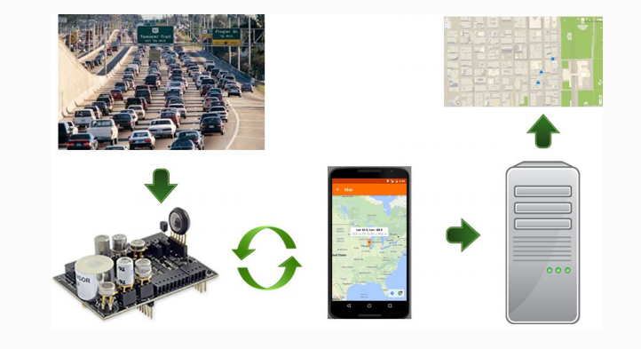

About
“Ozone, when it occurs at ground level, presents a serious air quality problem in many parts of the United States. When inhaled— even at very low levels— ozone can cause a number of respiratory health effects” - US EPA
The problem of air pollution is becoming more and more problematic as the world becomes more industrialized.
CleanAir helps users monitor pollutant levels around the world. Alerting users when appropriate.
CleanAir has an App that uses sensors to monitor the air quality around you.
By testing for different chemicals in the air we breathe we can detect if the levels of these chemicals are harmful to breathe.
Currently CleanAir can test for CO, CO2, O3, and NO2
Heat Map
Displays based on readings at given locations and gives a general sense of what data is being passed.
Marker Map
Gives exact readings at given locations. Better for seeing more specific readings.
Basic Design

Sensor Map
At the core of the marker map, is the sensorMap class, which contains methods for plotting the markers. It contains a field, which is a single instance of the nodeCache class. The nodeCache is responsible for requesting data from the server, and caching that data. When the map re-draws, sensorMap calls the cache, to return an array of nodes, which the sensor map class evaluates and plots. Before drawing new nodes, the sensor map calls a cleanUp method to ensure that any nodes which are no longer in lat/long bounds, time bounds, or may colide with another node are removed.
Node Cache
The cache has some rutines to track which nodes are within the bounds of the screen, as well as the bounds of time. As such, when the sensorMap calls on it, it only returns nodes which are eligible to be plotted. The cache refreshes server data on a timer, and only pushes a map redraw when the cache contents have changed.
Sensor Types
You will find that web/scripts/sensors.js is a very simply file, with a class declaration and an array that defines the sensors that the map knows of. Here you can tweak the warning / critical values of the gases
Control Manager
window.CM is an instance of the controlMgr class, which draws the UI on top of the map, and allows users to select between the various gas types. When the control manager initalizes, it loads the values from the sensors.js. It also includes the time display, and time span drop down.
Sensor Nodes
The sensorNode class is like a wraper that extends the functionality of the Marker With Label class. For full disclosure; Marker With Label is a class written by Gary Little of luxcentral.com, and is Licensed under the Apache License, Version 2.0. This class was used to extend the function of the Google marker class, which can only display a single charicter. Maker With Label allows for many charicters. The sensorNode class adds a timestamp field, and methods for the sensorMap class to interact with.
Map Details
Note : heatmap may only partly function right. Most development effort, and items described apply towards the marker map. Heatmap is to be considered experimental.
Safety Critical Features
- - Markers show readings from various sensors as raw number
- - User can select between various gas types
- - Markers change color to indicate danger levels based on researched safe levels
- - Markers should not overlap, as they become unreadable and degrade performance
- - When Markers overlap, precedence is given to the newest reading
- - The time span from the oldest to the newest marker is displayed
- + Users can make informed decisions as to whether the data is current/trustworthy
- - By default, only makers are displayed which are within 2 hours of the newest marker
Optimizations
- - Class based, object oriented design
- - Do not spend resources packing data points to be drawn if they
- + Overlap
- + Are too old
- + Are out of bounds
- - Re-draws are event driven, rather than continuous or timer based. Triggers :
- + The screen is repositioned
- + The screen is zoomed
- + Data pulled from the server has changed
- - Server data is cached, and passed to the evaluating / drawing routines when parameters change
- + To not wait on a re-pull
- + Particularly useful when rapidly dragging around
Android App
- Users can log in, have an associated user ID
- User can opt to enable data collection/uploading
- Choosing to collect data starts bluetooth connection to hardware
- Data periodically pushed to server, can view data on map via mobile
Field Test
- Taking the WASPMOTE out for real world data
- Collection from various areas around Chicagoland
- Simulate a more extreme situation with burning paper and cigarettes
Hardware
Waspmote
- - Open source sensor platform
- - Modular architecture: Allows for using only desired modules or sensors
- - Bluetooth low energy (BLE) chip is used on the Waspmote to transmit data from the gas sensor board wirelessly to mobile devices
Gas Sensor Board
- - Integrates into the Waspmote, designed to monitor environmental parameters
- - Allows inclusion of sensors (up to 6) that will measure different gases to allow for quantification of an area's air quality
- - Sensors to detect carbon dioxide, carbon monoxide, ozone, and nitrogen dioxide are being used by CleanAir to monitor the environment
Safety
Our biggest concern is that our application misreads/misinterprets data being sent. Depending on how reliable the application and interface is, users may become exposed to a harmful environment. Because of the nature of what we are measuring (long term consequences over immediate displays of symptoms). It is somewhat difficult to truly measure the consequences of our application misreading data. We also have no subject matter expert for our material. We are, however, taking data verification and database maintenance into account. Also, with the addition of more and more readings it would be possible to differentiate outliers.
Future Work
User Sign-in
Validating data system
An algorithm which looks for unrealistic deviations in data, and throws out what it considers to be outliers. AKA, if 5 people within 10 feet of each other are all returning data between 1 and 2, but a 6th person returns a reading of 5 at the same point in time, we would consider that bad.
Refactor the way we implemented permissions code to the way android shifted to recently in Marshmallow.
JIRA
Goals
GOAL 1: Users should be able to utilize the sensor and collect and upload readings of hazardous particulates
GOAL 2: Consumers should be able to receive data and warnings from the collected readings
Use Cases
Title: UC1
- Operation in hazardous conditions
- Related Goals:
- - G1, G2
- Description:
- - This use case describes how the app and sensors will be used by emergency crews who,
- are entering a potentially environmentally hazardous situation
- Primary Actors
- - Rescue workers (or other persons) who are regularly exposed to potentially hazardous particulates.
- Precondition:
- 1. Rescue worker has sensors connected to app
- 2. Rescue worker has the app installed on their personal device
- 3. Sensors are actively reading data
- PostCondition:
- 1. Sensors are off
- 2. User has received the relevant warnings if applicable
- Main Success Scenario:
- 1. Sensors relay correct information to database
- 2. Worker is notified of hazardous conditions
Title: UC2
- Normal Operation by pedestrians and/or citizens
- Related Goals
- - G2
- Description
- - This use case describes how the app will be used by users who are actively recording data
- and pushing to a database.
- - This use case also describes how a user with the app (but no sensors) may utilize the data
- that is being uploaded by others.
- Primary Actors
- - Users with the app and the sensors that are continuously reading data.
- - Users who utilize the app to gain environmental quality data in order to make potential lifestyle adjustments
- Precondition:
- 1. User may have sensors connected to app (if user is acting as a data gatherer)
- 2. User has application installed on their personal device
- 3. Sensors are reading data (if user is acting as a data gatherer)
- PostCondition:
- 1. User gets a measurement on the local air quality
- 2. Sensors are turned off
- 3. Data output from sensors was successfully recorded, pushed to database
- Main Success Scenario
- 1. Sensors are able to generate accurate readings
- 2. App records correct information, successfully sends to the database
- 3. User is notified of potential hazardous conditions and general environmental quality
Title: UC3
- Data collection for environmental research
- Related Goals
- - G2
- Description
- - This use case describes how an independent researcher can utilize the crowd sourced environmental data
- for research purposes
- Primary Actor
- - Researchers monitoring certain environmental conditions over time
- Precondition:
- 1. Researcher is able to connect to the database
- 2. Database contains accurate environmental data that was gathered from sensor network
- PostCondition:
- 1. Database connection terminated
- 2. Database integrity remains intact
- Main Success Scenario
- - Researcher/User able to successfully extract required information from database
User Manual
Hardware Setup
1. Attach each of the 4 sensors to the gas board.
2. Insert bluetooth chip onto the Waspmote, then insert the gasboard with attached sensors. Plug the battery into the Waspmote.
3. By using the associated Waspmote IDE, upload the program fast_main_measurement.pde to the board (this will get sensor readings every 15 seconds).
4. If program uploads succesfully, the Wasmpote will now run the measurement program whenever it is powered on. The Waspmote is now ready for use with the mobile app.
Linking Waspmote to Mobile App to Collect Data
1. Turn on the waspmote to start the measurement program. The Waspmote will now wait for 2 minutes for the mobile app to establish an initial connection via bluetooth as well as heat up the gas sensors that need heating.
2. Open the mobile app. From the main screen, open the menu and click the settings option. Under general, check the box to indicate that you want to collect gas readings. Navigate back to main screen. If bluetooth is not enabled, a prompt to enable it will display.
3. A message will display when the mobile app establishes the initial bluetooth link to the Waspmote.
4. The Waspmote will continue performing its measurement cycle in the background. Any time sensor data is gathered, it will be sent to the mobile app which will then post that data to the web server.
Viewing Maps
1. From the main screen, open the menu and select which map you would like to view (heatmap or marker map).
2. For each map, the user can select which specific gas he or she would like to monitor using the associated check boxes. The user can also use the drop down to select a time span.
Configuring Notifications
1. From the main screen, open the menu and select settings. From the settings menu, select the notifications.
2. The user can use the checkbox to indicate if he or she would like to receive notifications from the app. If selected, the app will monitor the data from the Waspmote in addition to the surrounding area and send push notifications if any gas reaches a dangerous level.
3. The user can also select one or more gas values and manually enter in a gas level that should be considered by the app to be dangerous. Notifications sent will be with respect to this newly indicated gas level.
Glossary
| Term | Definition |
|---|---|
| Hazardous Particulates | Particulates sensed by the application that are potentially hazardous to the user's health |
| Sensor | The Sensor |
| The App | May refer to web or mobile user facing app |
| Personal device | Smart phone or tablet |